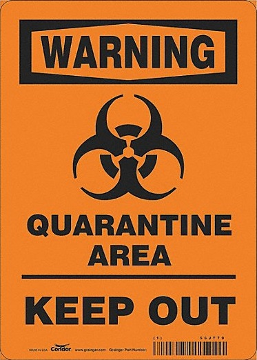

Consejos para prevenir el Covicho
Lavate las manos!!
Te explico por si todavía no sabés:
- Agua. Fundamental.
- Jabón. Fundamental también.
- Manos abajo del agua. Adivinaste, fundamental también.
Precauciones!
- No lavar por menos de i segundos.
- El lavado prolongado puede generar severas lesiones incluyendo pero no limitándose a la muerte. Ante
la
duda, recurrir al lavado no prolongado.